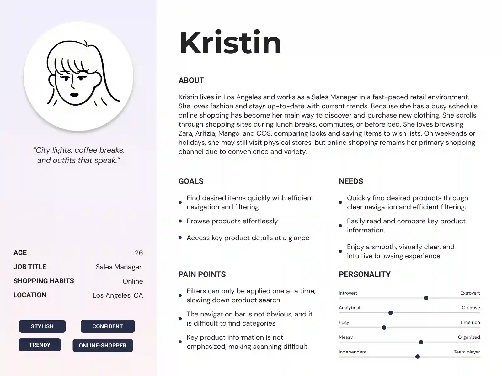
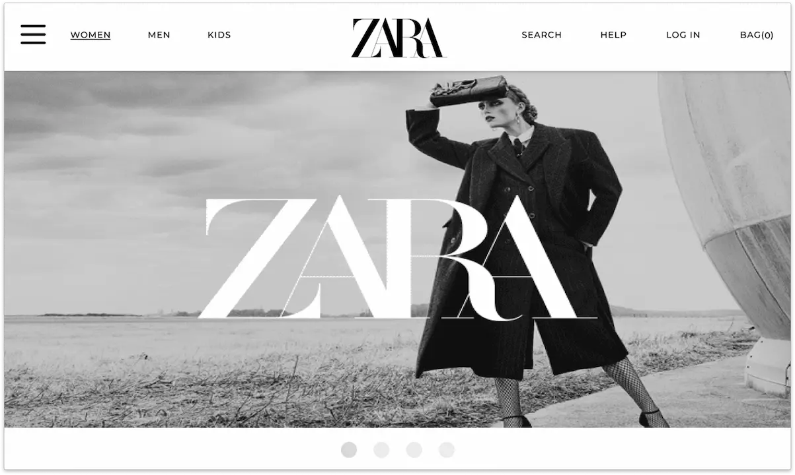
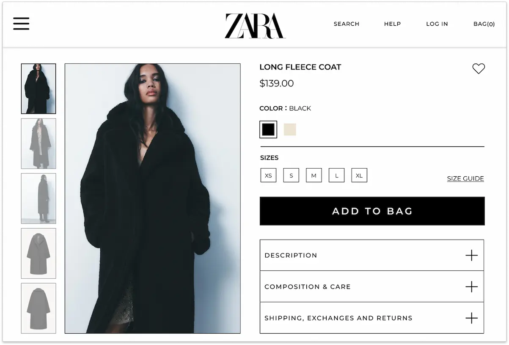
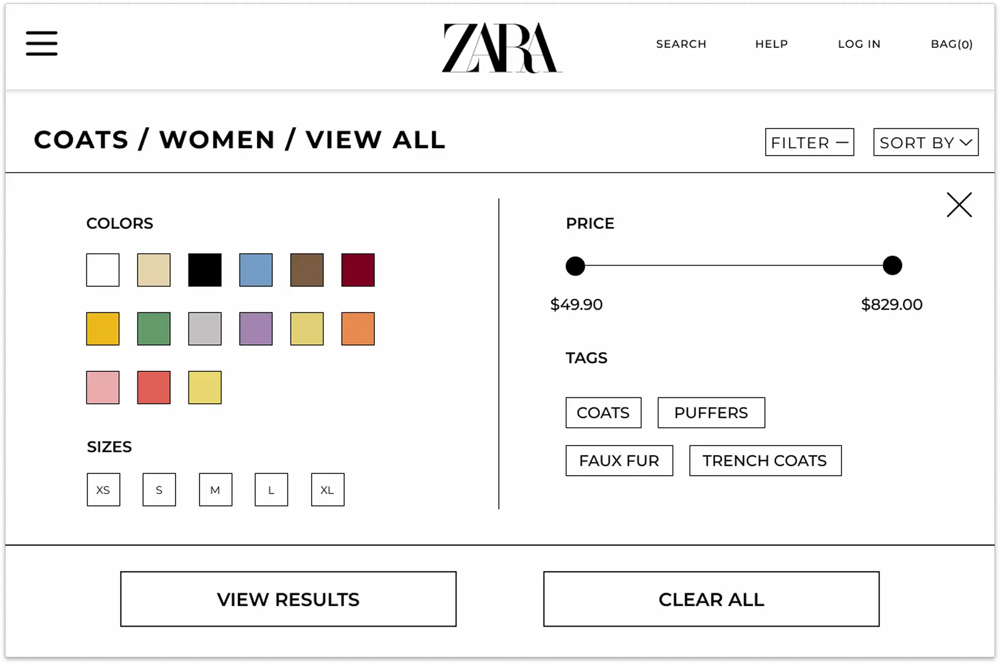

Zara Website Redesign

Project Overview
As my class project, I redesigned Zara's official website to address usability and accessibility challenges. My goal was to create a cleaner, more intuitive, and visually engaging online shopping experience.
Background
ZARA is a global fast-fashion brand known for its trendy clothing, modern aesthetics, and frequent collection updates. Its official website serves as a major online shopping platform where users browse, filter, and purchase products across multiple categories. However, despite its stylish look, the website’s usability and accessibility present challenges, such as confusing navigation, inconsistent visual hierarchy, and an inefficient filtering system that can disrupt the overall shopping experience.
The Problem
Poor navigation visibility
The navigation bar is hard to notice due to low contrast and small text, while the oversize logo draws more attention, and there is no interactive feedback to guide users.
Lack of clear text hierarchy
The text lacks hierarchy, and key details like product names and prices are not emphasized. Information is scattered across different areas of the page, reducing visual coherence.
Inefficient filter system
The filtering function only allows one filter to be applied at a time, requiring users to repeat the process multiple times. This increases task time and user frustration.
Target Audience
Fashion-conscious adults aged 20 to 35, typically trend seekers or fast-fashion shoppers who browse online to quickly discover and purchase clothing.
User Persona
Kristin is a 26-year-old sales manager who loves fashion, frequently shops online, and prioritizes efficiency and clarity when navigating digital interfaces.
Redesign Goal
01
Redesign the navigation bar with higher visual contrast, balanced element sizing, and clear interactive states to enhance visibility and user orientation.
02
Establish a clear visual hierarchy through varied font sizes and weights to emphasize key product details such as names and prices.
03
Allow users to apply multiple filters simultaneously to reduce interaction effort.
Solution
Enhanced navigation visibility
A contrasting background was added to visually separate the navigation bar from the hero section, ensuring it remains clearly visible and does not blend with the underlying content. The sizing and spacing of navigation elements were adjusted to create a more balanced layout.
Increase text hierarchy
On the product detail page, the layout was reorganized with product images placed on the left and descriptive text on the right, allowing users to scan information naturally from top to bottom. Key details such as product names and prices were emphasized using larger, bold fonts to establish a clear visual hierarchy and enhance readability.
Streamlined filtering process
All filter options were consolidated into a single interface, allowing users to apply multiple filters simultaneously. This redesign reduces unnecessary steps and helps users find products more efficiently.
Result
Improved navigation clarity
Usability testing showed that the redesigned navigation bar improved visibility and helped users locate sections more easily.
Enhanced readability
Establish a clear visual hierarchy through varied font sizes and weights to emphasize key product details such as names and prices.
Increased browsing efficiency
The new filtering interface lets users apply multiple filters at once, making product discovery faster and more efficient.